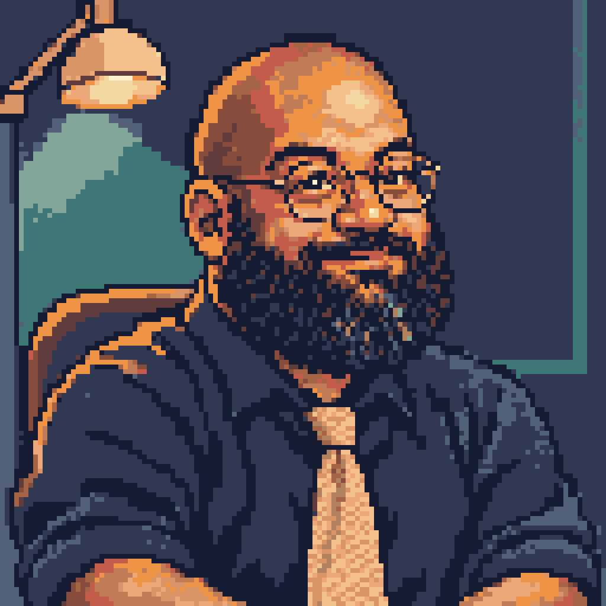
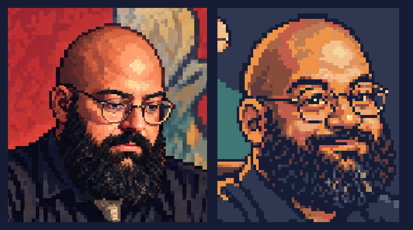
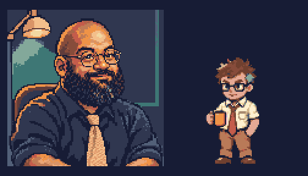

Rami: studio and headshot
Art review only. Likeness first, game style second, props last. The About page still uses its existing reference.
 Studio: 1536x1024. Logical 384x256 pixels at 4x.
Studio: 1536x1024. Logical 384x256 pixels at 4x.

Square headshot: 1024x1024. Logical 128x128 pixels at 8x.

Likeness check: reference left, new headshot right. Rounded bald head, round wire glasses, full beard and warm brown skin.

Style check: logical headshot and 96x112 hero portrait, both at 2x.